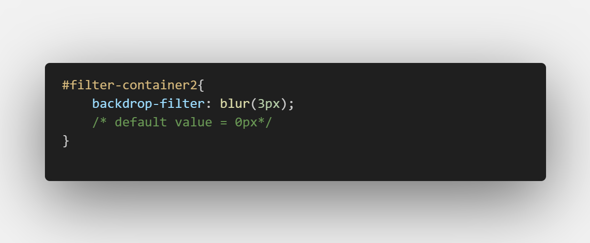
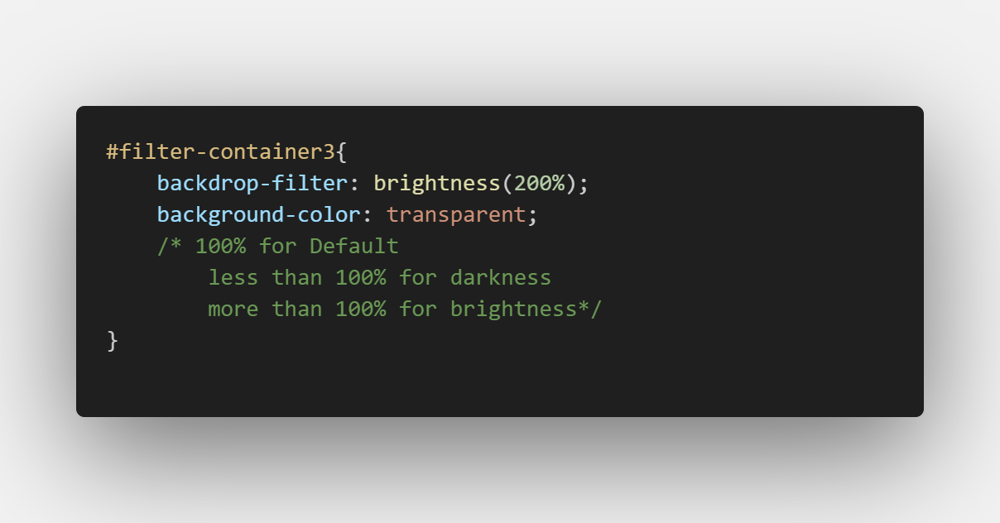
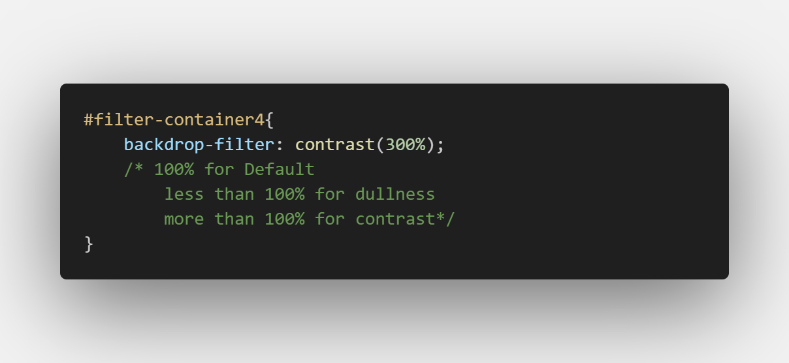
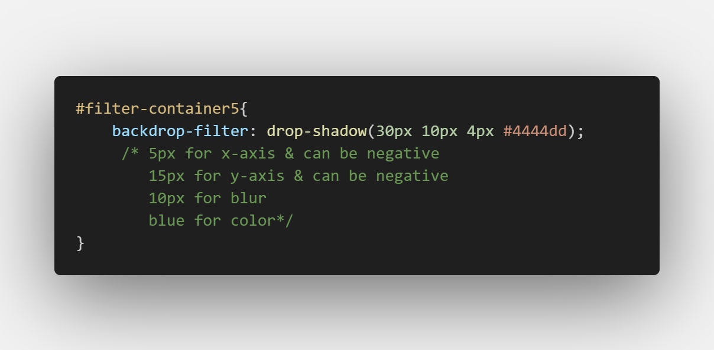
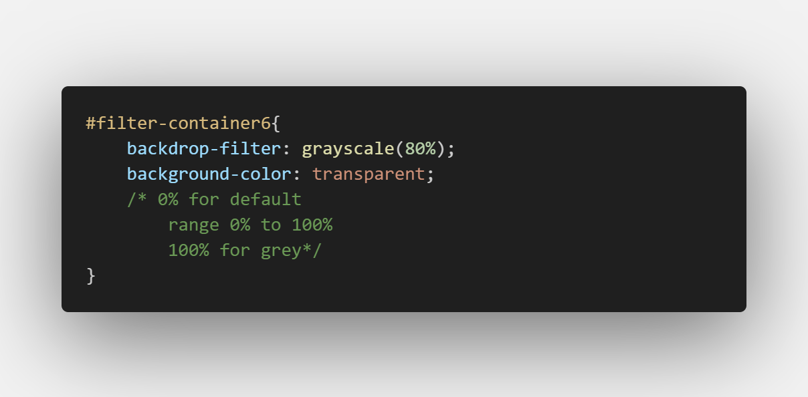
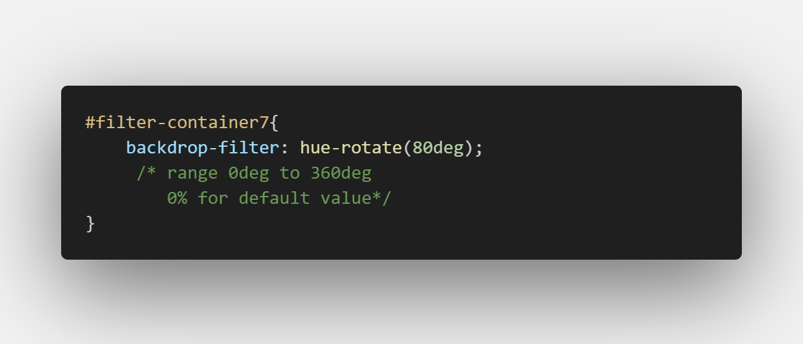
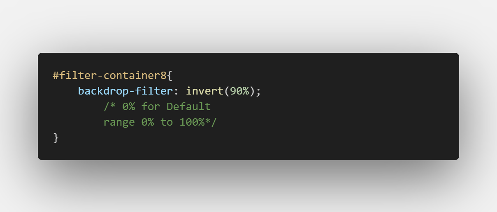
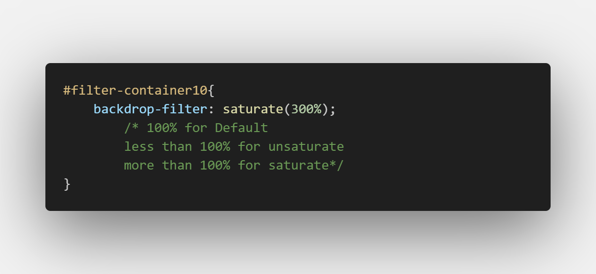
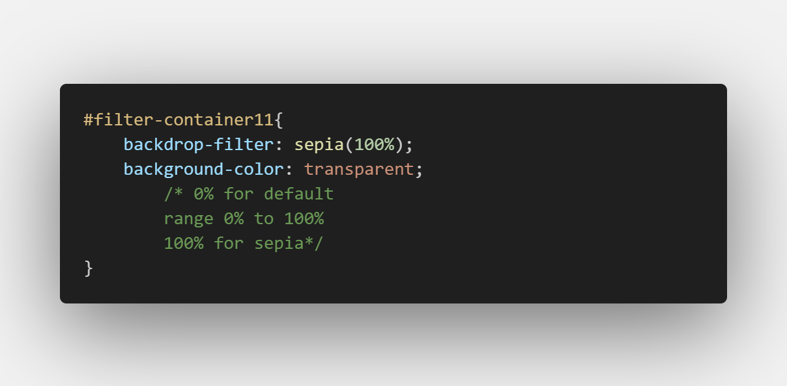
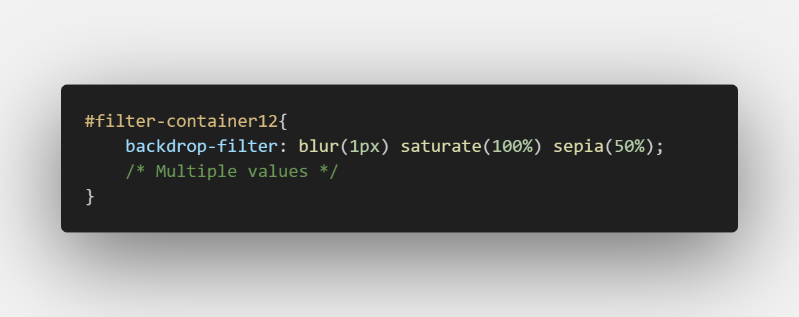

Backdrop-filter
Backdrop-filter values
Backdrop-filter: none
Backdrop-filter: blur() //Default value = 0px
Backdrop-filter: brightness() //Default value = 100%
Backdrop-filter: contrast() //Default value = 100%
Backdrop-filter: drop-shadow() //Sequence - x-axis, y-axis, blur, color
Backdrop-filter: grayscale()
Backdrop-filter: hue-rotate()
Backdrop-filter: invert()
Backdrop-filter: opacity()
Backdrop-filter: saturate()
Backdrop-filter: sepia()
Backdrop-filter: blur()
Backgroud-color: white has been used in this Div.
Backdrop-filter can also be used without background-color.

Backdrop-filter: brightness()

Backdrop-filter: contrast()

Backdrop-filter: drop-shadow()
Some Browsers may not support

Backdrop-filter: grayscale()

Backdrop-filter: hue-rotate()

Backdrop-filter: invert()

Backdrop-filter: opacity()
Some Browsers may not support
Backdrop-filter: saturate()

Backdrop-filter: sepia()

Multiple Filters
